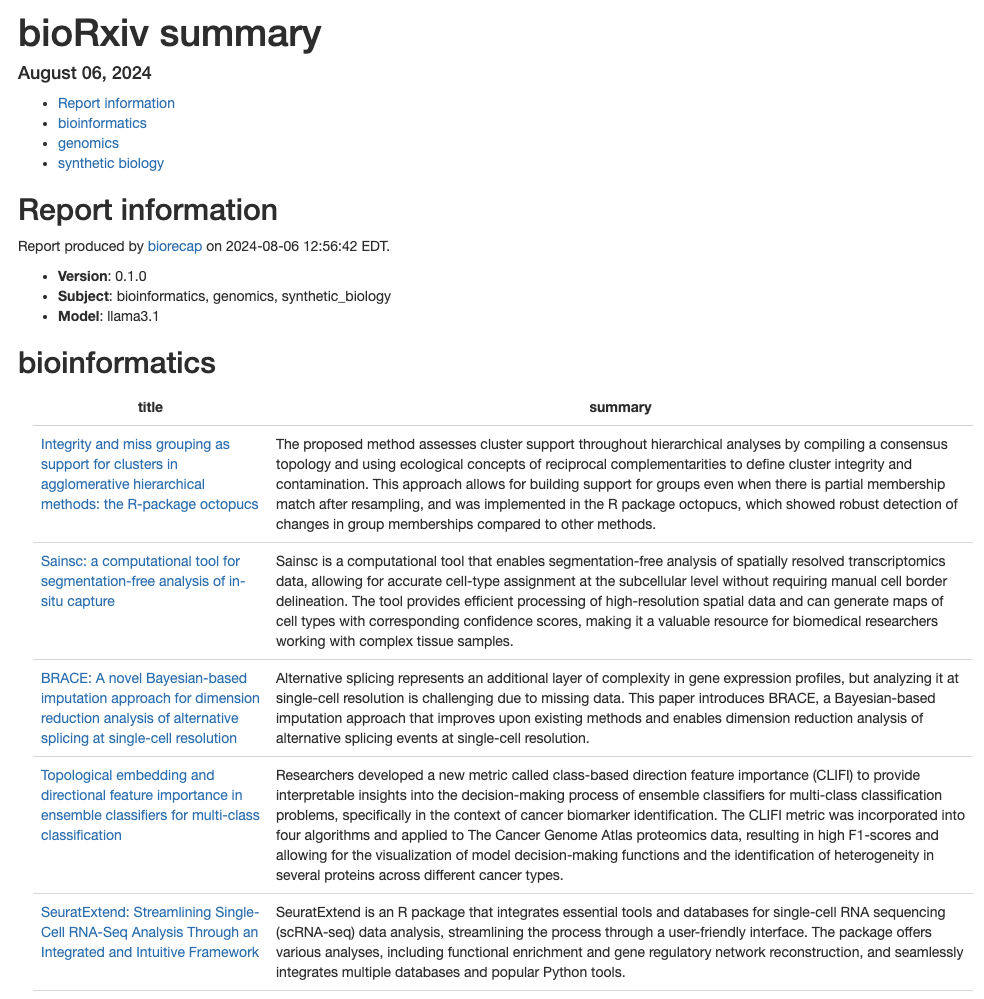

Retrieve and summarize bioRxiv preprints using a local LLM with Ollama via ollamar.
Installation
Install biorecap from GitHub (keep dependencies=TRUE to get Suggests packages needed to create the HTML report):
remotes::install_github("stephenturner/biorecap", dependencies=TRUE)Usage
Quick start
First, load the biorecap library.
Let’s make sure Ollama is running and that we can talk to it through R:
#> Ollama local server running
#> <httr2_response>
#> GET http://localhost:11434/
#> Status: 200 OK
#> Content-Type: text/plain
#> Body: In memory (17 bytes)Next we can list our available models:
#> # A tibble: 3 × 4
#> name model parameter_size quantization_level
#> <chr> <chr> <chr> <chr>
#> 1 gemma2:latest gemma2:latest 9.2B Q4_0
#> 2 llama3.1:latest llama3.1:latest 8.0B Q4_0
#> 3 llama3.1:70b llama3.1:70b 70.6B Q4_0 Write an HTML report containing summaries of recent preprints in select subject areas to the current working directory.
biorecap_report(output_dir=".",
subject=c("bioinformatics", "genomics", "synthetic_biology"),
model="llama3.1")Example HTML report generated from the bioRxiv RSS feed on August 6, 2024:

Details
The get_preprints() function retrieves preprints from bioRxiv’s RSS feeds. You pass one or more subjects to the subject argument.
pp <- get_preprints(subject=c("bioinformatics",
"genomics",
"synthetic_biology"))
pp#> # A tibble: 90 × 4
#> subject title url abstract
#> <chr> <chr> <chr> <chr>
#> 1 bioinformatics Integrity and miss grouping as support for clu… http… "The hi…
#> 2 bioinformatics Sainsc: a computational tool for segmentation-… http… "Spatia…
#> 3 bioinformatics BRACE: A novel Bayesian-based imputation appro… http… "Bayesi…
#> 4 bioinformatics Topological embedding and directional feature … http… "Cancer…
#> 5 bioinformatics SeuratExtend: Streamlining Single-Cell RNA-Seq… http… "Single…
#> 6 bioinformatics An Evolutionary Statistics Toolkit for Simplif… http… "We pre…
#> 7 bioinformatics A map of integrated cis-regulatory elements en… http… "Cis-re…
#> 8 bioinformatics MOSTPLAS: A Self-correction Multi-label Learni… http… "Plasmi…
#> 9 bioinformatics Bootstrap Evaluation of Association Matrices (… http… "Motiva…
#> 10 bioinformatics Thermodynamic modeling of Csr/Rsm- RNA interac… http… "Backgr…
#> # ℹ 80 more rowsThe add_prompt() function adds a prompt to each preprint that will be used to prompt the model.
pp <- pp |> add_prompt()
pp#> # A tibble: 90 × 5
#> subject title url abstract prompt
#> <chr> <chr> <chr> <chr> <chr>
#> 1 bioinformatics Integrity and miss grouping as support … http… "The hi… "I am…
#> 2 bioinformatics Sainsc: a computational tool for segmen… http… "Spatia… "I am…
#> 3 bioinformatics BRACE: A novel Bayesian-based imputatio… http… "Bayesi… "I am…
#> 4 bioinformatics Topological embedding and directional f… http… "Cancer… "I am…
#> 5 bioinformatics SeuratExtend: Streamlining Single-Cell … http… "Single… "I am…
#> 6 bioinformatics An Evolutionary Statistics Toolkit for … http… "We pre… "I am…
#> 7 bioinformatics A map of integrated cis-regulatory elem… http… "Cis-re… "I am…
#> 8 bioinformatics MOSTPLAS: A Self-correction Multi-label… http… "Plasmi… "I am…
#> 9 bioinformatics Bootstrap Evaluation of Association Mat… http… "Motiva… "I am…
#> 10 bioinformatics Thermodynamic modeling of Csr/Rsm- RNA … http… "Backgr… "I am…
#> # ℹ 80 more rowsLet’s take a look at one of these prompts:
I am giving you a paper’s title and abstract. Summarize the paper in as many sentences as I instruct. Do not include any preamble text. Just give me the summary.
Number of sentences in summary: 2
Title: SeuratExtend: Streamlining Single-Cell RNA-Seq Analysis Through an Integrated and Intuitive Framework
Abstract: Single-cell RNA sequencing (scRNA-seq) has revolutionized the study of cellular heterogeneity, but the rapid expansion of analytical tools has proven to be both a blessing and a curse, presenting researchers with significant challenges. Here, we present SeuratExtend, a comprehensive R package built upon the widely adopted Seurat framework, which streamlines scRNA-seq data analysis by integrating essential tools and databases. SeuratExtend offers a user-friendly and intuitive interface for performing a wide range of analyses, including functional enrichment, trajectory inference, gene regulatory network reconstruction, and denoising. The package seamlessly integrates multiple databases, such as Gene Ontology and Reactome, and incorporates popular Python tools like scVelo, Palantir, and SCENIC through a unified R interface. SeuratExtend enhances data visualization with optimized plotting functions and carefully curated color schemes, ensuring both aesthetic appeal and scientific rigor. We demonstrate SeuratExtend’s performance through case studies investigating tumor-associated high-endothelial venules and autoinflammatory diseases, and showcase its novel applications in pathway-Level analysis and cluster annotation. SeuratExtend empowers researchers to harness the full potential of scRNA-seq data, making complex analyses accessible to a wider audience. The package, along with comprehensive documentation and tutorials, is freely available at GitHub, providing a valuable resource for the single-cell genomics community.
The add_summary() function uses a locally running LLM available through Ollama to summarize the preprint. Let’s add the summary. Notice that we can do this all in a single pipeline. This takes a few minutes!
pp <-
get_preprints(subject=c("bioinformatics", "genomics", "synthetic_biology")) |>
add_prompt() |>
add_summary(model="llama3.1")Let’s take a look at the results:
pp
#> # A tibble: 90 × 6
#> subject title url abstract prompt summary
#> <chr> <chr> <chr> <chr> <chr> <chr>
#> 1 bioinformatics Integrity and miss grouping as … http… "The hi… "I am… "The p…
#> 2 bioinformatics Sainsc: a computational tool fo… http… "Spatia… "I am… "Sains…
#> 3 bioinformatics BRACE: A novel Bayesian-based i… http… "Bayesi… "I am… "Alter…
#> 4 bioinformatics Topological embedding and direc… http… "Cancer… "I am… "Resea…
#> 5 bioinformatics SeuratExtend: Streamlining Sing… http… "Single… "I am… "Seura…
#> 6 bioinformatics An Evolutionary Statistics Tool… http… "We pre… "I am… "The \…
#> 7 bioinformatics A map of integrated cis-regulat… http… "Cis-re… "I am… "The a…
#> 8 bioinformatics MOSTPLAS: A Self-correction Mul… http… "Plasmi… "I am… "Plasm…
#> 9 bioinformatics Bootstrap Evaluation of Associa… http… "Motiva… "I am… "The a…
#> 10 bioinformatics Thermodynamic modeling of Csr/R… http… "Backgr… "I am… "Resea…
#> # ℹ 80 more rowsLet’s look at one of those summaries. Here’s the summary for the SeuratExtend paper (abstract above):
SeuratExtend is an R package that integrates essential tools and databases for single-cell RNA sequencing (scRNA-seq) data analysis, streamlining the process through a user-friendly interface. The package offers various analyses, including functional enrichment and gene regulatory network reconstruction, and seamlessly integrates multiple databases and popular Python tools.
The biorecap_report() function runs this code in an RMarkdown template, writing the resulting HTML and CSV file with results to the current working directory.
biorecap_report(output_dir=".",
subject=c("bioinformatics", "genomics", "synthetic_biology"),
model="llama3.1")